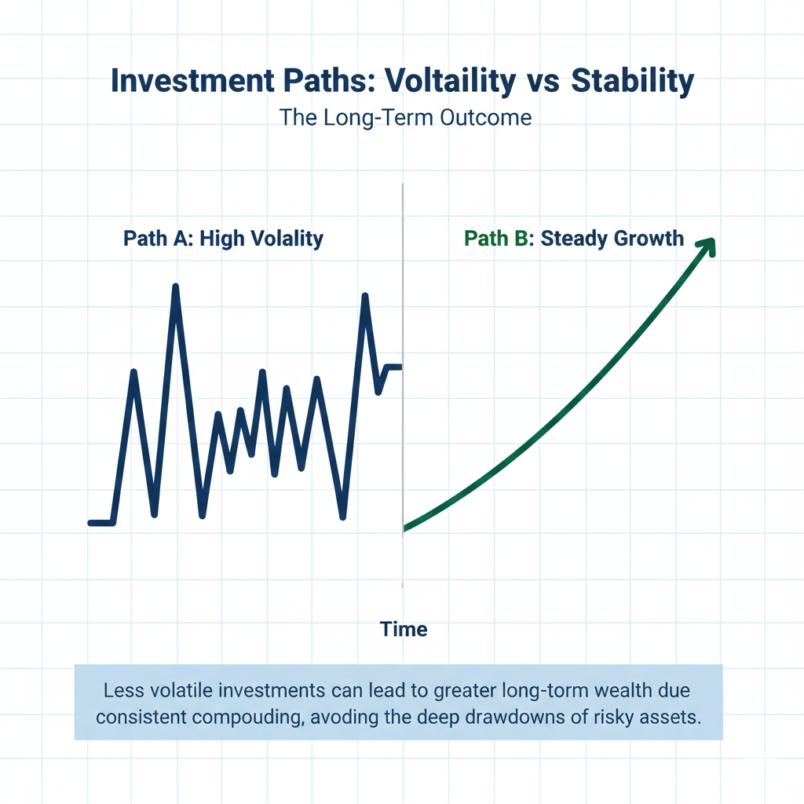
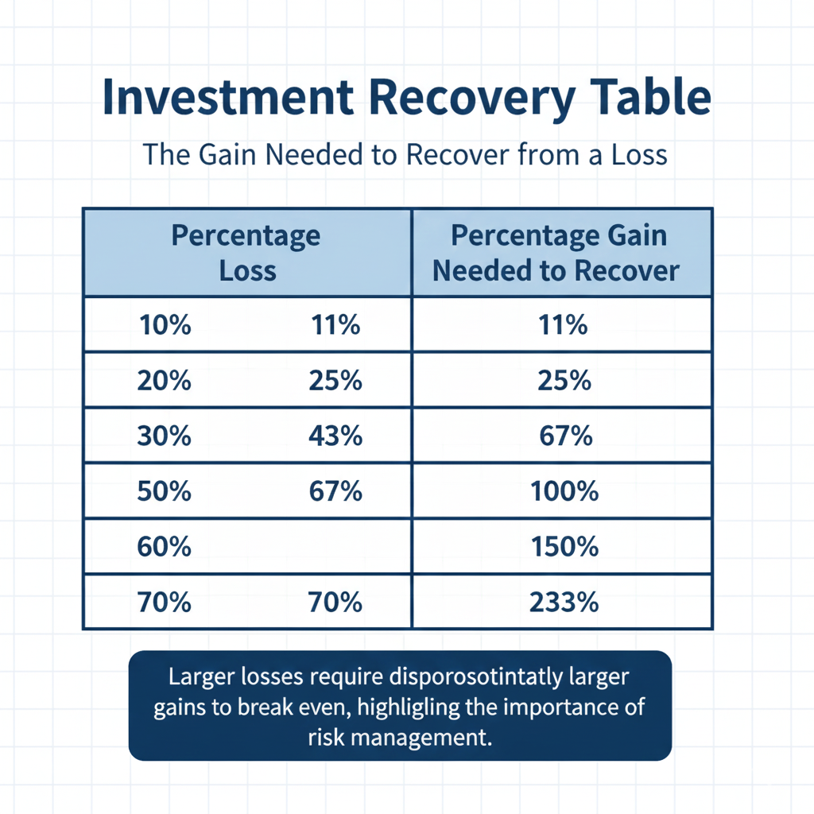
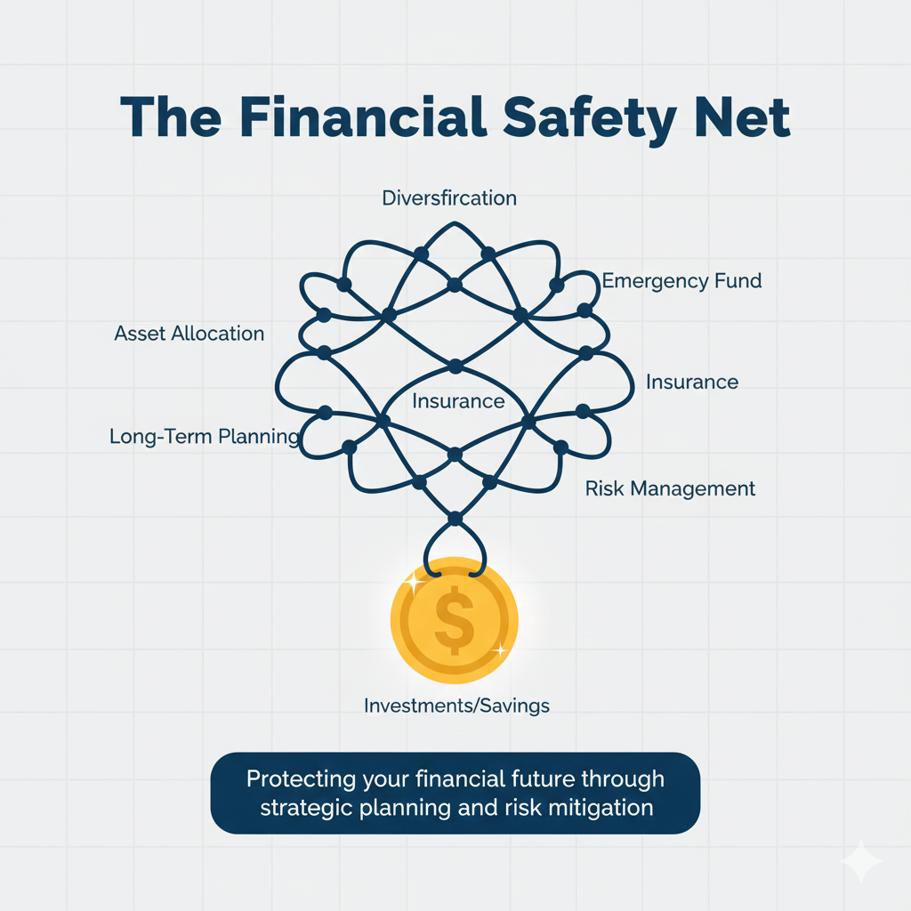

In the pursuit of financial growth, most beginners focus almost exclusively on "the win." We are naturally drawn to stories of high returns, explosive growth, and the thrill of picking a successful asset. However, seasoned investors and financial educators often emphasize a counterintuitive principle: the most critical factor in long-term success isn't how much you make, but how much you avoid losing. While chasing gains feels proactive, protecting what you already have—a concept known as capital preservation investing—is the actual engine of wealth over decades.
The reason for this shift in focus is deeply rooted in the mathematics of recovery. Most people assume that if they lose 10% of their value one year, a 10% gain the following year will bring them back to even. Unfortunately, the math of the financial markets does not work symmetrically. Losses create a vacuum that requires significantly more energy to escape than it took to enter. By understanding why avoiding losses investing is the foundation of a healthy portfolio, you can move from a speculative mindset to one of sustainable growth.
This article explores the fundamental pillars of risk management, the psychological traps that lead to unnecessary drawdowns, and the mathematical reality that makes capital preservation the secret sauce of the world’s most successful portfolios. By the end of this guide, you will understand why the best offense in the market is a disciplined, well-structured defense.
Table of Contents
- The Brutal Mathematics of Loss
- What is Capital Preservation Investing?
- Drawdown Meaning and Its Long-Term Impact
- The Psychology of Risk: Why Losing Hurts More
- Compounding: The Importance of Staying in the Game
- Risk Management Basics for Every Learner
- Long-Term Investing Risk vs. Short-Term Volatility
- Key Takeaways
The Brutal Mathematics of Loss
To grasp why avoiding loss is paramount, we must look at the "Asymmetry of Loss." This is a mathematical reality that punishes the investor more for a decline than it rewards them for a gain of the same percentage. Consider a simple example where you start with a set amount of capital. If you experience a 10% loss, you are left with 90% of your original sum. To get back to your starting point, a 10% gain on that remaining 90% only brings you back to 99% of your original total. You still need more growth just to reach zero.
As the losses grow larger, the recovery requirement grows exponentially. A 25% loss requires a 33% gain to break even. A 50% loss requires a 100% gain—you have to double your remaining money just to get back to where you started. This is the primary reason why high-risk strategies that lead to deep holes are so dangerous. It is much easier to avoid a 50% drop than it is to find an investment that will return 100% to fix the damage. (This concept connects with Stock Market Basics)
What is Capital Preservation Investing?
Capital preservation is an investment strategy where the primary goal is to prevent the loss of a portfolio's total value. While most growth-oriented strategies focus on maximizing the ceiling, capital preservation focuses on the floor. It is about ensuring that the core of your wealth remains intact, regardless of market conditions.
In practice, this doesn't mean avoiding all risk entirely. Every investment carries some level of risk. Instead, it means being intentional about which risks are worth taking and ensuring that no single event can wipe out a significant portion of your holdings. It involves a mix of asset allocation, diversification, and disciplined decision-making. (This relates to the guide on Why Risk Management Matters)
Drawdown Meaning and Its Long-Term Impact
In financial education, drawdown refers to the peak-to-trough decline during a specific period for an investment. If your account reaches a high point and then drops, the percentage of that drop is your drawdown. Understanding drawdown meaning is vital because it measures the pain an investor must endure before making a new high.
Deep drawdowns are the primary enemy of long-term wealth. Beyond the mathematical difficulty of recovering from them, they also create an opportunity cost. While your capital is tied up in a 40% drawdown, you may miss out on other opportunities because your funds are already committed to a losing position. Avoiding deep drawdowns allows your capital to remain liquid and available for new opportunities when the market eventually shifts.
The Psychology of Risk: Why Losing Hurts More
Human beings are not naturally wired for disciplined risk management. Behavioral economists have identified a phenomenon called "loss aversion," which suggests that the pain of losing money is twice as intense as the joy of gaining it. This bias often leads to poor decision-making, such as holding onto losing investments for too long in the hope they will come back.
Avoiding loss is more important than making money because it protects your mental state. When you have a solid plan for capital preservation, you are less likely to make emotional decisions driven by fear or greed. An investor who is down 5% is far more likely to remain rational than one who is down 50%. (This connects with Stock Market Psychology)
Compounding: The Importance of Staying in the Game
Compounding is often called the eighth wonder of the world, but it is extremely fragile. It requires one specific ingredient to work: time. A single massive loss can "reset" your compounding clock, undoing years of steady growth in a matter of weeks.
Think of compounding like a snowball rolling down a hill. A loss is like hitting a rock. A small rock might slow the snowball down, but a large rock can shatter it entirely. By prioritizing capital preservation, you are essentially scanning the hill for rocks and steering clear of them to ensure your growth continues uninterrupted.
Risk Management Basics for Every Learner
How does one actually go about avoiding losses? It starts with a few risk management basics that act as safety nets. First is asset allocation, which involves spreading capital across different types of investments that don't all move in the same direction at once. Second is position sizing, or limiting how much you commit to any single idea. Finally, having an exit strategy before you invest removes the emotional burden of deciding when to leave a failing position.
Long-Term Investing Risk vs. Short-Term Volatility
It is important to distinguish between volatility and permanent loss of capital. Volatility is the normal, day-to-day zig-zagging of prices. The real risk is a permanent loss—where the money never comes back. Avoiding loss doesn't mean hiding in a mattress, as inflation is also a significant long-term investing risk. The goal is a balanced approach that strictly guards against the catastrophic declines that prevent you from reaching your financial goals.
Key Takeaways
- The math of recovery is asymmetrical; a 50% loss requires a 100% gain just to break even.
- Capital preservation ensures you have the principal left to benefit from future market opportunities.
- Drawdowns carry heavy financial, emotional, and opportunity costs.
- Psychological biases like loss aversion can lead to irrational decisions during market stress.
- Risk management basics include asset allocation, position sizing, and pre-defined exit strategies.
- The primary goal is protecting against the permanent loss of capital, not avoiding all volatility.
Conclusion
In a world that celebrates the big win, the quiet discipline of avoiding loss is what separates those who build lasting wealth from those who are merely passing through the markets. Investing is a marathon, and you can't win if you've already been knocked out. By shifting your focus to capital preservation, you ensure that you are still standing when the most profitable opportunities finally arrive.
Educational Disclaimer:
This article is for educational and informational purposes only and should not be considered financial or investment advice. Investing involves risk.